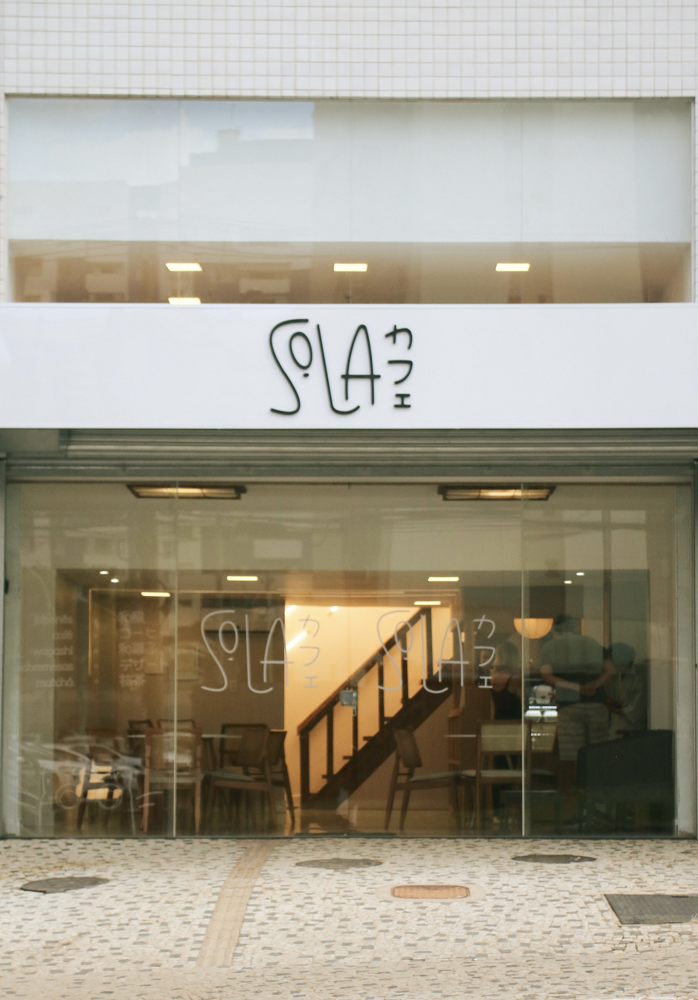

Fruto do sonho e da sintonia familiar com o universo dos cafés especiais, o Sola carrega em seu nome o seu propósito mais profundo. Inspirado na palavra solamente, ele celebra a uniquidade: o valor do que é único. Para nós, isso se traduz na exclusividade de cada experiência e no rigoroso cuidado dedicado à seleção e ao preparo de cada grão.
O que começou como um interesse genuíno do patriarca da família em compreender a riqueza e a complexidade do café logo se transformou em um propósito maior. Percebemos que o café não era apenas uma bebida, mas um elo singular, capaz de conectar pessoas, histórias e momentos através do acolhimento.
Essa ideia inicial começou a germinar em 2017. Foram seis anos de planejamento silencioso, estudos profundos e amadurecimento, garantindo que o projeto nascesse com a solidez e a excelência que acreditávamos ser necessárias.
Em 2022, encontramos no SIG (Setor de Indústrias Gráficas) do Sudoeste o cenário ideal para tirar esse sonho do papel. Após seis meses de uma reforma minuciosa e intensa preparação, o sonho se materializou: em agosto de 2023, inauguramos as portas do Sola. Toda a atmosfera e o conceito da nossa cafeteria foram fortemente inspirados na cultura nipônica, refletindo as raízes, os valores e as influências que a nossa família carrega.
Dessa nossa própria identidade e do desejo de expandir a experiência sensorial dos nossos clientes, nasceu naturalmente a Confeitaria Yogashi. Como um espaço que respira o conceito asiático, mas que está profundamente inserido na cultura brasileira, buscamos criar uma cafeteria que representasse o equilíbrio perfeito entre esses dois universos.